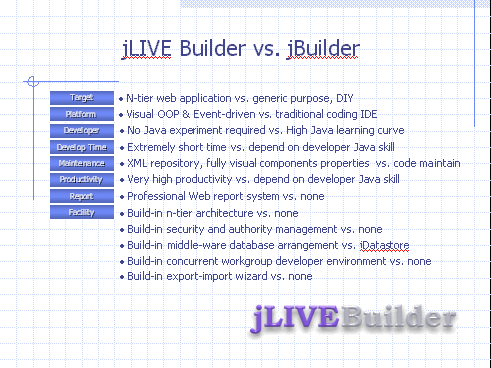

|
2.3 jLIVE Builder™ 與傳統式程式設計環境 (Traditional coding IDE)jLIVE Builder™ 的開發環境與傳統式程式設計環境是完全不同的，一般的設計環境，例如：JBuilder™、VisualAge™ 等等，是以撰寫程式碼 (coding IDE) 為主，jLIVE Builder™ 則以提供網際網路整體解決方案為目的。jLIVE Builder™ 是內建 N-tiers 的網際網路應用程式開發平台，而一般設計環境則必須自行尋找、研發解決方案。在網際網路快速發展的今日，企業界如何快速導入一個完整的整體解決方案 (total solution)，成為當務之急。一個完整的整體解決方案，不但要能符合網際網路應用所需，亦要能快速發展新的應用系統因應多變的商業市場，要能使開發者發展的應用程式有齊一的水準，亦要能容易維護更新與拓展。
 jLIVE Builder™ 是為因應網際網路應用程式開發的設計平台，以軟體元件技術 (software components) 配合Java™ 的跨平台特性，讓程式設計師以物件導向 (OOP) 和事件驅動 (event-driven) 的理念開發應用程式。完全視覺化的開發環境不需 Java™ 程式經驗，亦能在最短的時間內開發出應用程式。內建先進的網際網路多層式 ( n-tiers) 架構，讓企業即刻昇級至網際網路應用程式環境。可選用的授權式安全機制 (authorized security control)，讓網管及設計師能掌控應用程式及資料伺服器的存取與權限。視覺化的報表設計，網際網路的報表列印機制，無遠弗屆的程式執行，jLIVE Builder™ 完整的應用程式開發環境，正是企業網際網路應用系統整合(EAI) 的最佳方案。
Copyright © 2001~ 2004 Probe Technology . All Rights Reserved. Questions, comments, and suggestions to Service@probe.com.tw |